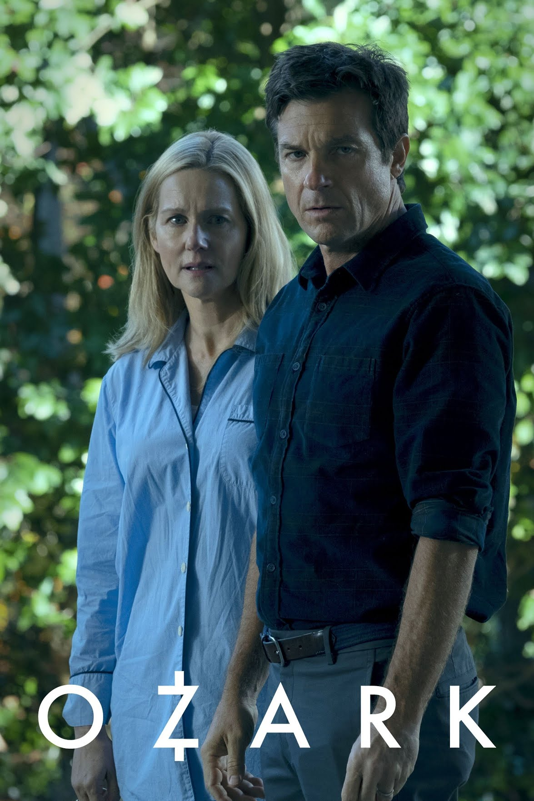
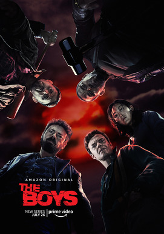
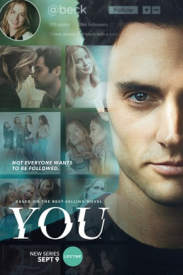

Favorite Thriller Series
Ozark
Ozark is an American crime drama television series created by Bill Dubuque and Mark Williams for Netflix and produced by MRC Television and Aggregate Films.[2][3][4] The series stars Jason Bateman and Laura Linney as Marty and Wendy Byrde, a married couple who move their family to the Lake of the Ozarks to continue their work laundering money for a Mexican drug cartel.[5][6] Bateman also serves as a director and executive producer for the series.[7][8] The first season was released on July 21, 2017;[4][9] the second season was released on August 31, 2018;[10] and the third season was released on March 27, 2020.[11][12] The first three seasons are 10 episodes each. In June 2020, the series was renewed for a fourth and final season consisting of 14 episodes split into two parts; the first part was released on January 21, 2022,[13][14] and the second was released on April 29, 2022.[15] Ozark received positive reviews from critics throughout its run, with particular praise for its tone, directing, production values, and performances (particularly those of Bateman, Linney, and Julia Garner).
The Boys
The Boys is an American satirical superhero television series developed by Eric Kripke for Amazon Prime Video. Based on the comic book of the same name by Garth Ennis and Darick Robertson, it follows the eponymous team of vigilantes as they combat superpowered individuals who abuse their powers. The series features an ensemble cast that includes Karl Urban, Jack Quaid, Antony Starr, Erin Moriarty, Dominique McElligott, Jessie T. Usher, Chace Crawford, Laz Alonso, Tomer Capone, Karen Fukuhara, and Nathan Mitchell. Originally intended to be a feature-length film, the comic book series adaptation began its development in 2008 with Adam McKay set to direct the film. Due to creative differences between the crew and the studios that picked up the film, the project was left in development hell. The development for the project was revived in 2016 by Cinemax, which announced that it would be reworked as a television series. Kripke was recruited to be the showrunner of the series, while Seth Rogen and Evan Goldberg would be the executive producers. Amazon Studios obtained the rights for the series in November 2017, with production starting in May 2018 in Toronto.
You
You is an American psychological thriller television series based on the books by Caroline Kepnes, developed by Greg Berlanti and Sera Gamble, and produced by Berlanti Productions, Alloy Entertainment, and A+E Studios in association with Warner Horizon Television, now Warner Bros. Television. The first season, which is based on the novel You, premiered on Lifetime in September 2018, and follows Joe Goldberg, a bookstore manager and serial killer who falls in love and develops an extreme obsession. The season stars Penn Badgley, Elizabeth Lail, Luca Padovan, Zach Cherry, and Shay Mitchell. Lifetime announced in July 2018 that You had been renewed for a second season, based on Kepnes' follow-up novel Hidden Bodies. The series later moved to Netflix and the second season was released in December 2019. The season follows Joe as he moves to Los Angeles and falls in love with local heiress Love Quinn. For the second season, Ambyr Childers was upgraded to a series regular, joining newly cast Victoria Pedretti, James Scully, Jenna Ortega, and Carmela Zumbado.
The Night Agent

The Night Agent is an American action thriller television series created by Shawn Ryan based on the novel of the same name by Matthew Quirk. Starring Gabriel Basso in the title role, it premiered on Netflix on March 23, 2023.[1] The series emerged as the third-most-viewed debuting series on Netflix in its first four days, and within a week it was renewed for a second season.[2] Within a month, it became the streamer's sixth-most-viewed series.
All of Us Are Dead

All of Us Are Dead (Korean: 지금 우리 학교는) is a South Korean coming-of-age[2] zombie apocalypse horror streaming television series. It stars Park Ji-hu, Yoon Chan-young, Cho Yi-hyun, Lomon, Yoo In-soo, Lee Yoo-mi, Kim Byung-chul, Lee Kyu-hyung, and Jeon Bae-soo. The series centers on a group of high school students in the fictional South Korean city of Hyosan, and their struggle to survive amidst a zombie outbreak. It is based on the Naver webtoon of the same name by Joo Dong-geun, which was published between 2009 and 2011.[3][4] This series was filmed at Sunghee Girls' High School in Andong, South Korea. The series was released on January 28, 2022, on Netflix.[5][6] Following its release, the series was watched over 474.26 million hours in its first 30 days on the service.[7] On June 6, 2022, the series was renewed for a second season.[8] The second season of the series is expected to be released in 2024.